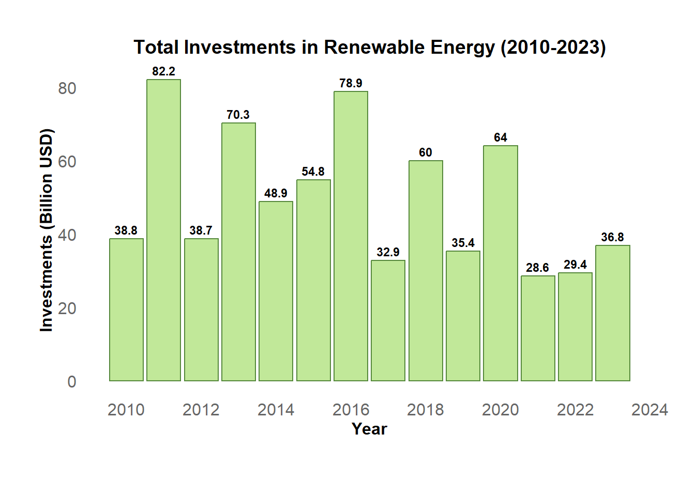

| Decade | Average Energy Production (TWh) |
|---|---|
| 2010-2019 | 482.57 |
| 2020-2023 | 449.64 |
What’s the Big Energy Challenge?
Australia is often seen as a powerhouse for renewable energy, thanks to its vast natural resources—especially solar. However, the numbers paint a more complex picture. Despite the country’s sunny climate, solar energy has struggled to reach its full potential, while biomass and hydro have surged ahead. So, what’s holding solar back, and how can Australia unlock this untapped resource?
Let’s have a closer look at Australia’s renewable energy landscape from 2010 to 2023, highlighting the fluctuations in both production and investment. With biomass and hydro leading the charge in 2023, solar energy remains underdeveloped, signaling major growth opportunities. .
Where’s the Data Coming From?
For this analysis, I tapped into the Global Renewable Energy and Indicators Dataset on Kaggle (shoutout to all the data geeks out there!). It is a powerful resource that provides detailed data on renewable energy trends and factors across the globe. This dataset is packed with information that spans various energy sources, socio-economic indicators, and environmental factors, making it an excellent tool for in-depth analysis.
Here are the key variables I used for my research:
Energy Type: The dataset covers multiple renewable energy sources, including solar, wind, hydro, and biomass. I specifically focused on the production of these energy types in Australia between 2010 and 2023.
Year: Timeframe of the data (2010-2023).
Production: For each energy type, production is measured in gigawatt-hours (GWh). To make comparisons over time easier, I converted these values into terawatt-hours (TWh).
Investments: The dataset provides insights into how much financial investment (in USD) was allocated to renewable energy in Australia each year during the study period.
This dataset also contains a wealth of additional socio-economic and environmental data, such as GDP, population, CO2 emissions, and even local weather patterns. However, for this analysis, I focused primarily on production and investment data relevant to Australia’s renewable energy sector.
I cleaned up the data to focus exclusively on Australia, making it easier to track trends over time. First, I converted all energy production values from gigawatt-hours (GWh) to terawatt-hours (TWh) for simpler comparisons. Next, I aggregated production data by year and energy type to calculate annual totals. To make long-term patterns clearer, I averaged the total production figures by decade—covering 2010-2019 and 2020-2023. Similarly, I organized data on renewable energy investments by year, converting the original values from USD to billions of dollars. With these adjustments, the data became much easier to interpret, allowing me to focus on the big question: Is Australia’s renewable energy sector moving in the right direction, or is it time to rethink our strategies?
Digging into the Numbers: What the Data Shows
Let’s dive into the numbers. When comparing renewable energy production between 2010-2019 and 2020-2023, there’s a clear dip in the recent years despite technological advancements and new projects. Here’s a summary of the average energy production by decade.
Take a look at Table 1 below for a snapshot:
Now, let’s talk money. Investment in renewable energy has been all over the place. One year, things are booming, and the next year, there’s a sharp decline. Figure 1 below shows the rollercoaster ride that investment trends have been on from 2010 to 2023. While there was a recovery in 2023, it’s clear we need a more stable, long-term commitment to keep the sector growing.

The most surprising part
| Energy Type | Total Production (TWh) |
|---|---|
| Biomass | 1360.7463 |
| Hydro | 1259.5227 |
| Geothermal | 1082.8621 |
| Wind | 1074.6494 |
| Solar | 582.4469 |
As you can see in Table 2, biomass and hydro were the big winners, producing over 1,000 TWh each, in 2023. Meanwhile, solar energy—a source we should be maximizing—was way behind. This signals a huge opportunity for growth in solar, which is kind of crazy considering Australia is known for its sunshine.
What’s the Takeaway?
Australia’s renewable energy sector needs a bit of a boost if we want to keep up with global trends. Right now, solar energy is vastly underdeveloped, which is a huge missed opportunity. To really get things moving, we need more stable investments and stronger policies that support innovation in the renewable space. By diversifying energy sources and focusing on solar, Australia can take the lead in the global market.
The Path Forward
Aligning policies with global climate goals, increasing investment in solar energy, and ensuring long-term support are essential steps. With these changes, Australia could build a stronger, more resilient renewable energy sector and make a significant impact on the global stage. Investments in renewable energy are critical to ensuring long-term sustainability. Diversifying financing methods is key to accelerating clean energy transitions, which is particularly important for Australia’s efforts to expand its solar and wind energy sectors (Dong et al., 2019).
References:
- Vijay, A. (2022). Global Renewable Energy and Indicators Dataset [Data Set]. Kaggle.
- Dong, X., Sun, T., Fang, Y., Wu, H., & Li, H. (2019). Renewable energy investments and financing methods: A guide to clean energy transitions. Journal of Cleaner Production, 236, 117632. https://doi.org/10.1016/j.jclepro.2019.117632
- Ritchie, H., Rosado, P., & Roser, M. (2024). Renewable Energy. Our World in Data.